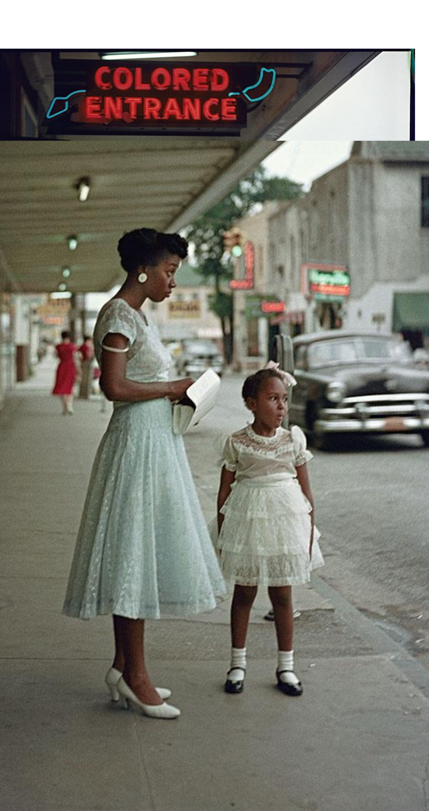
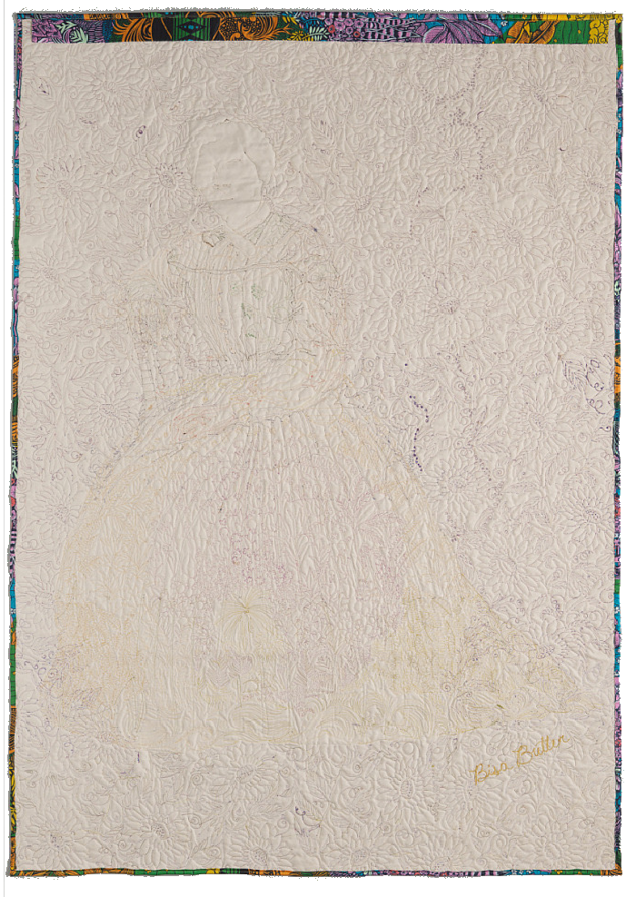

“Quilts always look different in person and always have more information to share”... “Painting with Fabric” tells the story, digitally, of how Bisa Butler takes photographs of historically notable people, places, or events surrounding civil rights and Black movements, and turns them into quilt works. Layering, color choice, pattern, stitching, scale, abstraction, and transparency are all wielded by Butler within the realm of the fabric medium to create the illusion of “painting” but with fabric. Through tools and overlays that go between reference photos, fabric processes, stitching, and more, the viewer can dissect Butler’s brilliance similar to how one could in a gallery setting.
Learn More About Butler's Works Here